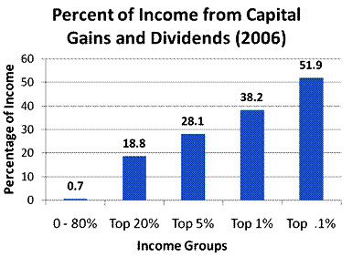

Table of Contents
9. Reporting of Current and Contingent Liabilities
9.1. Introduction to Liabilities
9.1.1. Defining Liabilities
9.1.1. Classifying Liabilities
9.2. Current Liabilities
9.2.1. Defining Current Liabilities
9.2.1. Accounts Payable
9.2.1. Notes Payable
9.2.1. Current Maturities of Long-Term Debt
9.2.1. Current Obligations Expected to Be Refinanced
9.2.1. Dividends Payable
9.2.1. Unearned and Deferred Revenues
9.2.1. Other Current Liabilities: Sales Tax, Income Tax, Payroll, and Customer Advances
9.3. Contingencies
9.3.1. Gain Contingencies
9.3.1. Loss Contingencies
9.4. Reporting and Analyzing Current Liabilities
9.4.1. Reporting Current Liabilities
9.4.1. What Goes on the Balances Sheet and What Goes in the Notes
9.4.1. Reporting Contingencies
9.4.1. Current Ratio
9.4.1. Acid Test Ratio
9.4.1. Working Capital Management Analysis
9. Reporting of Current and Contingent Liabilities
9.1. Introduction to Liabilities
9.1.1. Defining Liabilities
A liability is defined as an obligation of an entity arising from past transactions/events and settled through the transfer of assets.
Learning Objective
Explain how to identify a liability
Key Points
- Some of the characteristics of a liability include: a form of borrowing, personal income that is payable, a responsibility to others settled through the transfer of assets, a duty obligated to another without avoiding settlement, and a past transaction that obligates the entity.
- The IASB's definition of a liability is: a present obligation of the enterprise arising from past events, the settlement of which is expected to result in an outflow from the enterprise of resources embodying economic benefits.
- Types of liabilities found in the balance sheet include current liabilities, such as payables and deferred revenues, and long-term liabilities, such as bonds payable.
Key Terms
- deferred
- Of or pertaining to a value that is not realized until a future date (e.g., annuities, charges, taxes, income, either as an asset or liability.
- obligation
- A legal agreement stipulating a specified payment or action; the document containing such agreement.
- fiscal year
- An accounting period of one year, not necessarily coinciding with the calendar year.
Liability Definition & Characteristics
In financial accounting, a liability is defined as an obligation of an entity arising from past transactions or events, the settlement of which may result in the transfer or use of assets, provision of services or other yielding of economic benefits in the future. A liability is defined by the following characteristics:
- Any type of borrowing from persons or banks for improving a business or personal income that is payable in the current or long term.
- A duty or responsibility to others that entails settlement by future transfer or use of assets, provision of services, or other transaction yielding an economic benefit due at a specified or determinable date, on occurrence of a specified event, or on demand.
- A duty or responsibility that obligates the entity to another, leaving it little or no discretion to avoid settlement.
- A transaction or event that has already occurred and which obligates the entity.
Liability Defined by the IASB
Probably the most accepted accounting definition of a liability is the one used by the International Accounting Standards Board (IASB). The following is a quotation from the International Financial Reporting Standards (IFRS) Framework: "A liability is a present obligation of the enterprise arising from past events, the settlement of which is expected to result in an outflow from the enterprise of resources embodying economic benefits. "
Examples of Liabilities
Types of liabilities found on a company's balance sheet include: current liabilities like notes payable, accounts payable, interest payable, and salaries payable. Liabilities can also include deferred revenue accounts for monies received that may not be earned until a future accounting period. An example of a deferred revenue account is an annual software license fee received on January 1 and earned over the course of a year. The company's fiscal year end is May 31. For the current fiscal year, the company will earn 5/12 of the fee and the remaining amount (7/12) stays in a deferred revenue account until it is earned in the next accounting period. Long-term liabilities have maturity dates that extend past one year, such as bonds payable and pension obligations.
9.1.2. Classifying Liabilities
Two typical classification types for liabilities are current and long-term.
Learning Objective
Differentiate between current and long-term liabities
Key Points
- Current liabilities are often loosely defined as liabilities that must be paid within one year. For firms having operating cycles longer than one year, current liabilities are defined as those which must be paid during that longer operating cycle.
- Long-term liabilities are reasonably expected not to be liquidated or paid off within a year. They usually include issued long-term bonds, notes payables, long-term leases, pension obligations, and long-term product warranties.
- Contingent liabilities can be current or long-term and usually deal with legal actions or litigation claims against the entity or claims, such as penalties or fees, an organization encounters throughout the course of business.
Key Terms
- callable
- That which may be redeemed by its holder before it matures.
- contingent
- An event which may or may not happen; that which is unforeseen, undetermined, or dependent on something future; a contingency.
Types of Liabilities
Liabilities are classified in different types. The two main categories of these are current liabilities and long-term liabilities.
Current Liabilities
Current liabilities are often loosely defined as liabilities that must be paid within a single calender year. For firms with operating cycles that last longer than one year, current liabilities are defined as those liabilities which must be paid during that longer operating cycle. A better definition, however, is that current liabilities are liabilities that will be settled either by current assets or by the creation of other current liabilities.
Example of current liabilities include accounts payable, short-term notes payable, commercial paper, trade notes payable, and other liabilities incurred in the normal operations of the business. Some of these normal operating costs include salaries payable, wages payable, interest payable, income tax payable, and the current balance of a long-term debt that will be due within a single year. Other long-term obligations, such as bonds, can be classified as current because they are callable by the creditor. When a debt becomes callable in the upcoming year (or operating cycle, if longer), the debt is required to be classified as current, even if it is not expected to be called. If a particular creditor has the right to demand payment because of an existing violation of a provision or debt statement, then that debt should be classified as current also. In situations where a debt is not yet callable, but will be callable within the year if a violation is not corrected within a specified grace period, that debt should be considered current. The only conditions under which the debt would not be classified as current would be if it's probable that the violation will be collected or waived. A business can have different liabilities depending on the debt instruments into which they enter.
Long-term Liabilities
Long-term liabilities are reasonably expected not to be liquidated or paid off within the span of a single year. These usually include issued long-term bonds, notes payables, long-term leases, pension obligations, and long-term product warranties.
Contingent Liabilities
Contingent liabilities can be current or long-term. They typically deal with legal actions or litigation claims against the entity or claims (such as penalties or fees) an organization encounters throughout the course of business. Contingent items are accrued if the claims and their likelihood of occurring are probable, and if the relevant amount of the liability can be reasonably estimated.
9.2. Current Liabilities
9.2.1. Defining Current Liabilities
Current liabilities are usually settled with cash or other assets within a fiscal year or operating cycle, whichever period is longer.
Learning Objective
Identify a current liability
Key Points
- A current liability can be defined in one of two ways: (1) all liabilities of the business that are to be settled in cash within a firm's fiscal year or operating cycle, or (2) all liabilities of the business that are to be settled by current assets or by the creation of new current liabilities.
- Common characteristics of liabilities are (1) borrowed funds for use that must be repaid, (2) a duty to another party that involves the payment of an economic benefit, (3) a duty that obligates the entity to another without avoiding settlement, and (4) a past transaction that obligates the entity.
- Current liabilities are many times not "current" and are actually past due. For example, accounts payable are due within 30 days and are typically paid within 30 days. However, they do often run past 30 days in some situations.
Key Terms
- obligation
- A legal agreement stipulating a specified payment or action; the document containing such agreement.
- settlement
- The delivery of goods by the seller and payment for them by the buyer, under a previously agreed trade or transaction or contract entered into.
Definition of a Liability
In financial accounting, a liability is defined as an obligation of an entity arising from past transactions or events, the settlement of which may result in the transfer or use of assets, provision of services or other yielding of future economic benefits. Liabilities are reported on the balance sheet, along with assets and owner's equity. They are an important part of the basic accounting equation -- assets = liabilities + owner's equity. A liability is defined by one of the following characteristics:
- A borrowing of funds from individuals or banks for improving a business or personal income that is payable during a short or long time period.
- A duty or responsibility to others that entails settlement by future transfer or use of assets, provision of services, or other transaction yielding an economic benefit, at a specified date, on occurrence of a specified event, or on demand.
- A duty or responsibility that obligates the entity to another entity, with no option to avoid settlement.
- A transaction or event that has already occurred and obligates the entity .
Definition of a Current Liability
A current liability can be defined in one of two ways: (1) all liabilities of the business that are to be settled in cash within a firm's fiscal year or operating cycle, whichever period is longer or (2) all liabilities of the business that are to be settled by current assets or by the creation of new current liabilities. Another important point is that current liabilities are many times not "current" and are actually past due. For example, accounts payable are due within 30 days and are typically paid within 30 days. However, they do often run past 30 days or 60 days in some situations. So, the accounts payable balance reported on the balance sheet under "current" liabilities may include amounts that are over 30 days due. A current liability, such as a credit purchase, can be documented with an invoice. Current liabilities are debt owed and payable no later than the current accounting period.
9.2.2. Accounts Payable
Accounts payable is money owed by a business to its suppliers and creditors and typically shown on its balance sheet as a current liability.
Learning Objective
Differentiate between trade and expense payables and give examples of common accounts-payable terms
Key Points
- Accounts payable is recorded in the A/P sub-ledger at the time an invoice is vouchered for payment. Vouchered means that an invoice is approved for payment and has been recorded in the general ledger or A/P subledger as an outstanding, or open, liability because it has not been paid.
- Payables are often categorized as trade payables, which are for the purchase of physical goods that are recorded in inventory; another category is expense payables or purchases of goods or services that are expensed.
- Common examples of expense payables are advertising, travel, entertainment, office supplies, and utilities. These items are obtained through credit that suppliers offer to their customers by allowing them to pay for a product or service after it has been received or used.
Key Term
- sub-ledger
- A subset of the general ledger used in accounting. The subledger shows detail for part of the accounting records such as property and equipment, prepaid expenses, etc.
Definition of Accounts Payable
Accounts payable (A/P) is money owed by a business to its suppliers and creditors. It is typically shown on its balance sheet as a current liability. In addition to its disclosure on the balance sheet, accounts payable is recorded in the A/P sub-ledger at the time an invoice is vouchered for payment. Vouchered, or vouched, means that an invoice is approved for payment and has been recorded in the general ledger or A/P sub-ledger as an outstanding, or open, liability because it has not been paid. Payables are often categorized as trade payables, or purchases of physical goods that are recorded in inventory. Another category is expense payables, or purchases of goods or services that are expensed. Common examples of expense payables are advertising, travel, entertainment, office supplies, and utilities. A/P is a form of credit that suppliers offer to their customers by allowing them to pay for a product or service after it has been received. Suppliers offer various payment terms for an invoice .
In most businesses, accounts payable is a common type of current liability.Processing Accounts Payable
A/P payment terms may include the offer of a cash discount for paying an invoice within a defined number of days. For example, the 2/10 Net 30 term means that the seller will deduct 2% from the invoice total if payment is made within 10 days and the invoice must be paid within 30 days. If the payment is delayed until Day 31 then the full amount of the invoice is due and past due charges may apply. As invoices are paid, the amounts are recorded as reductions to the accounts payable balance in the liability section and cash in the assets section of the balance sheet. The A/P payment process begins as an invoice is received by the purchaser and matched to a packing (receiving) slip and purchase order. When the three documents are matched, the invoice is paid. This is referred to as the three-way match. The three-way match can be modified to expedite payments. For example, three-way matching may be limited solely to large-value invoices, or the matching is automatically approved if the received quantity is within a certain percentage of the amount authorized in the purchase order.
9.2.3. Notes Payable
A note payable is a liability where one party makes an unconditional written promise to pay a specific sum of money to another.
Learning Objective
Explain how a note payable differs from other liabilities
Key Points
- The terms of a note usually include the principal amount, interest rate (if applicable), parties involved, date, terms of repayment (which may include interest), and maturity date.
- Negotiable promissory notes are used extensively in combination with mortgages in the financing of real estate transactions. Notes are also issued, along with commercial papers, to provide capital to businesses.
- To report the note as a current liability it should be due within a 12-month period or current operating cycle, whichever is longer. The note payable amount can include the principal as well as the interest payment amounts due.
Key Terms
- mortgage notes payable
- a written promise to repay a specified sum of money plus interest at a specified rate and length of time to fulfill the promise, specifically for a loan secured by real property
- notes payable
- promisory notes due to the company
- default
- The condition of failing to meet an obligation.
- negotiable
- Able to be transferred to another person, with or without endorsement.
Definition of Promissory Note
A promissory note is a negotiable instrument, where one party (the maker or issuer) makes, under specific terms, an unconditional promise in writing to pay a determined sum of money to the other (the payee), either at a fixed or determinable future time or on demand by the payee. The terms of a note usually include the principal amount, interest rate (if applicable), parties involved, date, terms of repayment (which may include interest), and maturity date. Sometimes, provisions are included concerning the payee's rights in the event of a default, which may include foreclosure of the maker's assets. Demand promissory notes are notes that do not carry a specific maturity date, but are due on demand by the lender. Usually the lender will only give the borrower a few days notice before the payment is due. For loans between individuals, writing and signing a promissory note are often instrumental for tax and record keeping purposes .
Accounting for Notes Payable
Negotiable promissory notes are used extensively in combination with mortgages in the financing of real estate transactions. Notes are also issued, along with commercial papers, to provide capital to businesses. When a note is signed and it becomes a binding agreement, a notes payable can be recorded to report the debt on the balance sheet. To report the note as a current liability it should be due within a 12-month period or current operating cycle, whichever is longer. The note payable amount can include the principal as well as the interest payment amounts due. If periodic payments are made throughout the term of the note, the payments will reduce the notes payable balance. It's important not to confuse a note with a loan contract, which is a legally distinct document from a note. It is non-negotiable, and does not include an unconditional promise to pay clause.
9.2.4. Current Maturities of Long-Term Debt
The portion of long-term liabilities that must be paid in the coming 12-month period are classified as current liabilities.
Learning Objective
Explain the reporting of the current portion of a long-term debt
Key Points
- Long-term liabilities are liabilities with a due date that extends over one year, such as bonds payable with a maturity date of 10 years. Long-term liabilities are a way to show the existence of debt that can be paid in a time period longer than one year.
- The portion of long-term liabilities that must be paid in the coming 12-month period are moved from the long-term liability section to the current liability section of the balance sheet.
- Current debt on the balance sheet is listed by maturity date, in relation to the due date of other current liabilities. If a current liability section has an accounts payable account (due in 30 days), a current balance of loans payable (due in 12 months) would be listed after accounts payable.
Key Terms
- bond
- Evidence of a long-term debt, by which the bond issuer (the borrower) is obliged to pay interest when due, and repay the principal at maturity, as specified on the face of the bond certificate. The rights of the holder are specified in the bond indenture, which contains the legal terms and conditions under which the bond was issued. Bonds are available in two forms: registered bonds and bearer bonds.
- debenture
- A certificate that certifies an amount of money owed to someone; a certificate of indebtedness.
- declaration date
- the day the Board of Directors announces its intention to pay a dividend
- current liability
- all liabilities of the business that are to be settled in cash within the fiscal year or the operating cycle of a given firm, whichever period is longer
Definition of Long-Term Debt
Long-term liabilities are liabilities with a due date that extends over one year, such as a notes payable that matures in 2 years. In accounting, the long-term liabilities are shown on the right side of the balance sheet, along with the rest of the liability section, and their sources of funds are generally tied to capital assets. Examples of long-term liabilities are debentures, bonds, mortgage loans and other bank loans (it should be noted that not all bank loans are long term since not all are paid over a period greater than one year. ) Also long-term liabilities are a way for a company to show the existence of debt that can be paid in a time period longer than one year, a sign that the company is able to obtain long-term financing .
Long-Term Debt Due in the Current Period
The portion of long-term liabilities that must be paid in the coming 12-month period are classified as current liabilities. The portion of the liability considered "current" is moved from the long-term liabilities section to the current liabilities section. The position of where the debt should be disclosed is based on its maturity date in relation to the due date of other current liabilities. For example, a loan for which two payments of USD 1,000 are due--one in the next 12 months and the other after that date--would be split into one USD 1000 portion of the debt classified as a current liability, and the other USD 1000 as a long-term liability (note this example does not take into account any interest or discounting effects, which may be required depending on the accounting rules that may apply). If the current liability section already has an accounts payable account (balance which is usually paid off in 30 days), the current portion of the loan payable (due within 12 months) would be listed after accounts payable.
9.2.5. Current Obligations Expected to Be Refinanced
Per FASB 6, current obligations that an enterprise intends and is able to refinance with long term debt have different reporting requirements.
Learning Objective
Explain why a company would refinance a debt
Key Points
- Refinancing may refer to the replacement of an existing debt obligation, or current liability, with a debt obligation under different terms.
- The most common type of debt refinancing occurs in the home mortgage market. Reasons to refinance include to obtain a better interest rate; to consolidate current debt; to free up cash and reduce periodic payments; and to reduce debt risk.
- Calculating the up-front, ongoing, and potentially variable transaction costs of refinancing is an important part of the decision on whether or not to refinance, since they can wipe out any savings generated by the new loan terms.
Key Terms
- closing fees
- a variety of costs associated with the transaction (above and beyond the price of the asset itself) and incurred by either the buyer or the seller. These costs are typically paid at a future point in time, known as the "closing" when title switches hands.
- non-recourse debt
- a secured loan (debt) that is secured by a pledge of collateral, typically real property, but for which the borrower is not personally liable. If the borrower defaults, the lender/issuer can seize the collateral, but the lender's recovery is limited to the collateral.
- recourse debt
- a debt that is not backed by collateral from the borrower.
- current replacement cost
- the amount that an entity would have to pay to replace an asset at the present time, according to its current worth
Definition of Refinancing
Refinancing may refer to the replacement of an existing debt obligation with a debt obligation under different terms. The terms and conditions of refinancing may vary widely by the type of debt involved and is based on several economic factors such as:
- the inherent and projected risk of the asset(s) backing the loan,
- the financial stability of the lender,
- credit availability,
- banking regulations,
- the borrower's credit worthiness, and
- the borrower's net worth.
If the replacement of debt occurs under financial distress, refinancing might be referred to as debt restructuring. The most common type of debt refinancing occurs in the home mortgage market.
Refinanced debt must be finalized and the new loan terms approved before reporting it and replacing it for the old debt in the liability section.
Reasons to Refinance Debt
A loan or other type of debt can be refinanced for various reasons:
- To take advantage of a better interest rate or loan terms (a reduced monthly payment or a reduced term)
- To consolidate other debt(s) into one loan (a potentially longer/shorter term contingent on interest rate differential and fees)
- To reduce the monthly repayment amount (often for a longer term, contingent on interest rate differential and fees)
- To reduce or alter risk (e.g. switching from a variable-rate to a fixed-rate loan)
- To free up cash (often for a longer term, contingent on interest rate differential and fees)
Risks of Refinanced Debt
Calculating the up-front, ongoing, and potentially variable transaction costs of refinancing is an important part of the decision on whether or not to refinance. If the refinanced loan has lower monthly repayments or consolidates other debts for the same repayment, it will result in a larger total interest cost over the life of the loan and will result in the borrower remaining in debt for many more years. Most fixed-term loans are subject to closing fees and points and have penalty clauses that are triggered by an early repayment of the loan, in part or in full.
Penalty clauses are only applicable to loans paid off prior to maturity and involve the payment of a penalty fee. The above-mentioned items are considered the transaction fees on the refinancing. These fees must be calculated before substituting an old loan for a new one, as they can wipe out any savings generated through refinancing.
In some jurisdictions, refinanced mortgage loans are considered recourse debt, meaning that the borrower is liable in case of default, while un-refinanced mortgages are non-recourse debt.
9.2.6. Dividends Payable
Dividends are payments made by a corporation to its shareholders; the payment amount is reported as dividends payable on the balance sheet.
Learning Objective
Explain what a dividend is and how it is reported on the financial statements
Key Points
- There are two ways to distribute cash to shareholders: share repurchases (reported as treasury stock in the owner's equity section of the balance sheet) and dividends (liability).
- A shareholder receives a dividend in proportion to the shares he owns. He must also be a shareholder on the date of record in order to be eligible for the dividend.
- The declared per share dividend amount is multiplied by the number of shares outstanding and this result is debited to retained earnings and credited to dividends payable. Dividends payable is recorded as a current liability on the company's books when the dividend is declared.
Key Terms
- treasury stock
- A treasury or "reacquired" stock is one which is bought back by the issuing company, reducing the amount of outstanding stock on the open market ("open market" including insiders' holdings).
- retained earnings
- Retained earnings are the portion of net income that is retained by the corporation rather than distributed to its owners as dividends.
Dividends are the portion of corporate profits paid out to shareholders. When a corporation earns a profit or surplus, that money can be put to two uses: it can either be re-invested in the business (called retained earnings), or it can be distributed to shareholders as dividends.
There are two ways to distribute cash to shareholders: share repurchases (reported as treasury stock in the owner's equity section of the balance sheet) or dividends.
Many corporations retain a portion of their earnings and pay out the remaining earnings as a dividend. A dividend is allocated as a fixed amount per share. Therefore, a shareholder receives a dividend in proportion to the shares he owns -- for example, if shareholder Y owns 100 shares when company Z declares a dividend of USD 1.00 per share. then shareholder Y will receive a dividend of USD 100 for his shares.
{kind=link}
Companies that declare dividends must record a liability for the amount of the dividends that will be paid to investors.
For the company, a dividend payment is not an expense, but the division of after tax profits among shareholders. On the dividend declaration date, a company's board of directors announces its intention to pay a dividend to shareholders on record as of a certain date (date of record). The per share dividend amount is multiplied by the number of shares outstanding and this result is debited to retained earnings and credited to dividends payable.
Dividends payable is recorded as a current liability on the company's books; the journal entry confirms that the dividend payment is now owed to the stockholders. On the declaration date, the Board announces the date of record and a payment date; the payment date is the date when the funds are sent to the shareholders and the dividends payable account is reduced for the payment amount.
9.2.7. Unearned and Deferred Revenues
A deferred revenue is recognized when cash is received upfront for a product before delivery or for a service before rendering.
Learning Objective
Explain the purpose of classifying transactions as either deferred or unearned revenue
Key Points
- A deferred item, in accrual accounting, is any account where a revenue or expense, recorded as an liability or asset, is not realized until a future date (accounting period) or until a transaction is completed.
- Unearned revenues are recorded because the earnings process is not complete when the cash is received, so the cash is recorded as a liability for the products or services that are due to the buyer.
- An example of a deferred revenue is the monies received for a 12-month magazine subscription. The proceeds on the subscription relate to a future benefit (magazine) for the buyer that he will receive over the course of 12 months.
Key Terms
- unearned revenue
- money received for goods or services which have not yet been delivered
- expense
- In accounting, an expense is money spent or costs incurred in an businesses efforts to generate revenue
- revenue
- Income that a company receives from its normal business activities, usually from the sale of goods and services to customers.
Definition of Deferred and Unearned Revenues
A deferred item, in accrual accounting, is any account where a revenue or expense, recorded as an liability or asset, is not realized until a future date (accounting period) or until a transaction is completed. Examples of deferred items include annuities, charges, taxes, income, etc. If the deferred item relates to an expense (cash has been paid out), it is carried as an asset on the balance sheet. If the deferred item relates to revenue (cash has been received), it is carried as a liability. A deferred revenue is specifically recognized when cash is received upfront for a product before delivery or for a service before rendering. In these cases, the earnings process is not complete when the cash is received, so the cash is recorded as a liability for the products or services that are due to the buyer. A deferred revenue item involves cash received before the earnings process is complete.
Accounting for Deferred and Unearned Revenues
An example of a deferred revenue is the monies received for a 12-month magazine subscription. The proceeds on the subscription relate to a future benefit (magazine) for the buyer that he will receive over the course of 12 months. Since the seller has received full payment for all 12 issues that will be delivered over the course of the year, the payment is recorded as unearned or deferred revenue in the current liability section of the balance sheet. If cash received is for benefits that extend past the current accounting period, a long-term liability would be recorded instead. As each magazine is delivered to the buyer (earnings process is now complete), the applicable "earned" portion of the original payment is transferred from the liability account to subscription revenue, which is disclosed on the income statement.
9.2.8. Other Current Liabilities: Sales Tax, Income Tax, Payroll, and Customer Advances
Other current liabilities reported on the balance sheet are sales tax, income tax, payroll, and customer advances (deferred revenue).
Learning Objective
Explain how sales tax payable, income tax payable, salaries and wages payable and deferred revenue appear on the financial statements
Key Points
- A sales and use tax is a tax paid to a governing body by a seller for the sales of certain goods and services.
- An income tax is a tax levied on the income of individuals or businesses (corporations or other legal entities).
- Wages and salaries in cash consist of wages or salaries payable at regular weekly, monthly or other intervals. This includes payments by results and piecework payments, plus allowances such as those for working overtime.
- Deferred revenue is, in accrual accounting, money received for goods or services which have not yet been delivered and revenue on the sale has not been earned.
Key Terms
- capital gains
- a profit that results from a disposition of a capital asset , such as stock , bond or real estate , where the amount realized on the disposition exceeds the purchase price.
- jurisdiction
- the limits or territory within which authority may be exercised
- deferred tax
- A timing difference arises when an item of income or expense is recognized for tax purposes but not accounting purposes, or vice versa, creating an asset or liability.
Other Current Liabilities
Sales Tax Payable
The sales and use tax is a tax paid to a governing body by a seller for the sales of certain goods and services. The payment of the tax by the seller occurs periodically and varies depending on the jurisdiction. Usually laws allow (or require) the seller to collect funds for the tax from the consumer at the point of purchase. Laws may allow sellers to itemized the tax separately from the price of the goods or services, or require it to be included in the price (tax-inclusive). The tax amount is usually calculated by applying a percentage rate to the taxable price of a sale. Sales tax payable can be accrued on a monthly basis by debiting sales tax expense and crediting sales tax payable for the tax amount applicable to monthly sales. The sales tax payable account is reported in the current liability section of the balance sheet until the tax is paid. Taxes, employee salaries, and customer advances that will be payable or earned within a 12-month period can be reported as current liabilities.
Income Tax Payable
Income tax is a tax levied on the income of individuals or businesses (corporations or other legal entities). Corporate tax refers to a direct tax levied on the net earnings made by companies or associations and often includes the capital gains of a company. Net earnings are generally considered gross revenue minus expenses. Expenses can vary; for example, corporate expenses related to fixed assets are usually deducted in full over their useful lives by using percentage rates based on the class of asset to which they belong. Accounting principles and tax rules about recognition of expenses and revenue will vary at times, giving rise to book-tax differences. If the book-tax difference is carried over more than a year, it is referred to as a deferred tax. Future assets and liabilities created by a deferred tax are reported on the balance sheet. Income tax payable can be accrued by debiting income tax expense and crediting income tax payable for the tax owed; the payable is disclosed in the current liability section until the tax is paid.
Salaries and Wages Payable
Wages and salaries in cash consist of wages or salaries payable at regular weekly, monthly, or other intervals, including payments by results and piecework payments, plus allowances like:
- working overtime;
- amounts paid to employees away from work for short periods (e.g., on holiday);
- ad hoc bonuses and similar payments;
- commissions, gratuities and tips received by employees.
Customer Advances (Deferred Revenue)
Deferred revenue is, in accrual accounting, money received for goods or services that have not yet been delivered and revenue on the sale has not been earned. According to the revenue recognition principle, the deferred amount is recorded as a liability until delivery is made, at which time it is converted into revenue. An example of a typical customer advance is the receipt of an annual maintenance contract fee, where the entire contract is paid up front. The receipt of \$12,000 for the annual maintenance contract is initially recorded as deferred revenue. As the maintenance service is rendered and a portion of the fee is earned, \$1,000 is recognized periodically each month as revenue and the deferred revenue account is reduced.
9.3. Contingencies
9.3.1. Gain Contingencies
Gain contingencies, or possible occurrences of a gain on a claim or obligation involving the entity, are reported when realized (earned).
Learning Objective
Explain how a company reports a gain contingency on their financial statements
Key Points
- If a specific event that can cause the gain occurs, and the gain is realized, then the gain is accrued for and reported in the financial statements. It is also disclosed in the notes section.
- Probable and quantifiable gains are not accrued for reporting purposes, but they can be disclosed in the notes to the financial statements if they are material. If the gain is not probable or reasonably estimated, but could materially effect financial statements, the gain is disclosed in a note.
- The materiality concept states that if a gain contingency, that remains unrealized, affects the economic decision of statement users, it should be disclosed in the notes.
- Following conservative constraints for a gain contingency, only a realized gain should be accrued for and disclosed on an income statement.
Key Terms
- Contingency
- A possibility; something which may or may not happen. This also can mean a chance occurrence, especially in, unexpected expenses
- unrealized
- Not realized; possible to obtain, yet not obtained.
Gain Contingency
Gain contingencies, or the possible occurrences of a gain on a claim or obligation that involves the entity, are reported when realized (earned). If a specific event that can cause the gain occurs, and the gain is realized, then the gain is disclosed . If the gain is probable and quantifiable, the gain is not accrued for financial reporting purposes, but it can be disclosed in the notes to financial statements. If the gain is not probable or its amount cannot be reasonably estimated, but its effect could materially affect financial statements, a note disclosing the nature of the gain is also disclosed in the notes. Care should be taken that misleading language is not used regarding the potential for the gain to be realized. The disclosure of gain contingencies is affected by the materiality concept and the conservatism constraint. Renovation plans and projects can increase the value of a building and eventually bring about a gain. However these gains should only be accrued when the gain is realized.
Materiality
Materiality is a concept or convention within auditing and accounting that relates to the importance/significance of an amount, transaction, or discrepancy. For example, an auditor expresses an opinion on whether financial statements are prepared, in all material aspects, in conformity with generally accepted accounting principles (GAAP). Professional judgment is required to determine what is material and what isn't. Generally, if the omission or misstatement of information can influence the economic decision of financial statement users, the missing or incorrect information is considered material. Thus, if a gain contingency, that remains unrealized, affects the economic decision of statement users, it should be disclosed in the notes.
Conservatism
Most accounting principles follow the conservative constraint, which encourages the immediate disclosure of losses and expenses on the income statement. This constraint also encourages the omission of revenues and gains until those gains are realized. Thus, for a gain contingency, only a realized gain is accrued for and disclosed on the income statement. A material gain contingency that is both probable and reasonably estimated can be disclosed in the notes to financial statements.
9.3.2. Loss Contingencies
A loss contingency may be incurred by the entity based on the outcome of a future event, such as litigation.
Learning Objective
Summarize how a company would report a loss contingency on their financial statements
Key Points
- Due to conservative accounting principles, loss contingencies are reported on the balance sheet and footnotes on the financial statements, if they are probable and their quantity can be reasonably estimated.
- Unlike gain contingencies, losses are reported immediately as long as they are probable and reasonably estimated. They do not have to be realized in order to report them on the balance sheet.
- For losses that are material, but may not occur and their amounts can not be estimated, a note to the financial statements disclosing the loss contingency is reported.
Key Terms
- incur
- To render somebody liable or subject to.
- probable
- Likely or most likely to be true.
Definition of Loss Contingencies
A loss contingency is incurred by the entity based on the outcome of a future event, such as litigation. Due to conservative accounting principles, loss contingencies are reported on the balance sheet and footnotes on the financial statements, if they are probable and their quantity can be reasonably estimated. A footnote can also be included to describe the nature and intent of the loss. The likelihood of the loss is described as probable, reasonably possible, or remote. The ability to estimate a loss is described as known, reasonably estimable, or not reasonably estimable. The indirect method adjusts net income (rather than adjusting individual items in the income statement).
Contingent Liabilities for Losses
Loss contingencies can refer to contingent liabilities that may arise from discounted notes receivable, income tax disputes, or penalties that may be assessed because of some past action or failure of another party to pay a debt that a company has guaranteed. Unlike gain contingencies, losses are reported immediately as long as they are probable and reasonably estimated. They do not have to be realized in order to report them on the balance sheet. At least a minimum amount of the loss expected to be incurred is accrued. For losses that are material, but may not occur and their amounts cannot be estimated, a note to the financial statements disclosing the loss contingency is reported.
Example of a Disclosed Loss Contingency
A jury awarded \$5.2 million to a former employee of the Company for an alleged breach of contract and wrongful termination of employment. The Company has appealed the judgment on the basis of errors in the judge's instructions to the jury and insufficiency of evidence to support the amount of the jury's award. The Company is vigorously pursuing the appeal. The Company and its subsidiaries are also involved in other litigation arising in the ordinary course of business. Since it presently is not possible to determine the outcome of these matters, no provision has been made in the financial statements for their ultimate resolution. The resolution of the appeal of the jury award could have a significant effect on the Company's earnings in the year that a determination is made. However, in management's opinion, the final resolution of all legal matters will not have a material adverse effect on the Company's financial position.
9.4. Reporting and Analyzing Current Liabilities
9.4.1. Reporting Current Liabilities
Current liabilities are reported first in the liability section of the balance sheet because they have first claim on company assets.
Learning Objective
Explain how current liabilities are shown on the financial statements
Key Points
- Current liabilities are typically due and paid for during the current accounting period or within a one year period. They are paid off with assets or other current liabilities.
- For many companies, accounts payable is the first balance sheet account listed in the current liabilities section. Accounts payable includes goods, services, or supplies that were purchased with credit and for use in the operation of the business and payable within a one year period.
- Long-term liabilities are listed in a separate section after current debt; however, for all long-term liabilities, any amounts due in the current fiscal year are reported under the current liability section.
Key Terms
- bond
- Evidence of a long-term debt, by which the bond issuer (the borrower) is obliged to pay interest when due, and repay the principal at maturity, as specified on the face of the bond certificate. The rights of the holder are specified in the bond indenture, which contains the legal terms and conditions under which the bond was issued. Bonds are available in two forms: registered bonds and bearer bonds.
- audit
- An independent review and examination of records and activities to assess the adequacy of system controls, to ensure compliance with established policies and operational procedures, and to recommend necessary changes in controls, policies, or procedures
Current Liabilities in the Balance Sheet
The balance sheet, or statement of financial position, is a snapshot of a company's assets, liabilities, and owner's equity on a given date. The presentation of the balance sheet should support the accounting equation of assets = liabilities + owner's equity. Liabilities are disclosed in a separate section that distinguishes between short-term and long-term liabilities. Short-term, or current liabilities, are listed first in the liability section of the statement because they have first claim on company assets. Current liabilities are typically due and paid for during the current accounting period or within a one year period. They are paid off with assets or other current liabilities. Current liabilities is the first section reported under liabilities on the balance sheet.
Accounts Payable
For many companies, accounts payable is the first balance sheet account listed in the current liabilities section. For example, accounts payable for goods, services, or supplies that were purchased with credit and for use in the operation of the business and payable within a one-year period would be current liabilities. Accounts payable are typically due within 30 days. Amounts listed on a balance sheet as accounts payable represent all bills payable to vendors of a company, whether or not the bills are more or less than 30 days old. Therefore, late payments are not disclosed on the balance sheet for accounts payable. An aging schedule showing the amount of time certain amounts are past due may be presented in the notes to audited financial statements; however, this is not common accounting practice.
Other Liabilities
In addition to current liabilities, long-term liabilities are listed in a separate section after current debt. Long-term liabilities can include bonds, mortgages, and loans that are payable over a term exceeding one year. However, for all long-term liabilities, any amounts due in the current fiscal year are reported under the current liability section.
9.4.2. What Goes on the Balances Sheet and What Goes in the Notes
The balance sheet lists current liability accounts and their balances; the notes provide explanations for the balances, which are sometimes required.
Learning Objective
Explain why a company would use a note to the balance sheet
Key Points
- All liabilities are typically placed on the same side of the balance sheet as the owner's equity because both those accounts have credit balances.
- Current liabilities and their account balances as of the date on the balance sheet are presented first on the balance sheet, in order by due date. The balances in these accounts are typically due in the current accounting period or within one year.
- Current liability information found in the notes to the financial statements provide additional explanation on the account balances and any circumstances affecting them. Accounting principles can sometimes require this type of disclosure.
Key Terms
- LLP
- Limited liability partnership.
- pension
- A regularly paid gratuity paid regularly as benefit due to a person in consideration of past services; notably to one retired from service, on account of retirement age, disability, or similar cause; especially, a regular stipend paid by a government to retired public officers, disabled soldiers; sometimes passed on to the heirs, or even specifically for them, as to the families of soldiers killed in service.
- LLC
- Limited liability company.
The Balance Sheet
In financial accounting, a balance sheet or statement of financial position is a summary of the financial balances of a sole proprietorship, a business partnership, a corporation, or other business organization, such as an LLC or an LLP. Assets, liabilities, and the equity of stockholders are listed as of a specific date, such as the end of a fiscal year or accounting period. Of the four basic financial statements, the balance sheet is the only statement which applies to a single point in time of a company's calendar year. Balance sheets are presented with assets in one section, and liabilities and equity in the other section, so that the two sections "balance. " The fundamental accounting equation is: assets = liabilities + equity ([).

If an error is found on a previous year's financial statement, a correction must be made and the financials reissued.
Current Liabilities on the Balance Sheet
All liabilities are typically placed on the same side of the report page as the owner's equity because both those accounts have credit balances (asset accounts, on the other hand, have debit balances). Current liabilities and their account balances as of the date on the balance sheet are presented first, in order by due date. The balances in these accounts are typically due in the current accounting period or within one year. Current liabilities can represent costs incurred for employee salaries and wages, production and build up of inventory, and acquisition of equipment which are needed and used up during normal business operations.
Information in the Notes
Current liability information found in the notes to the financial statements provide additional explanation on the liability balances and any circumstances affecting them. Accounting principles can sometimes require the disclosure of specific information for the benefit of the financial statement user. For example, companies that pay pension plan benefits require additional footnote disclosure that provide the user with additional details on pension costs and the assets used to fund it.
9.4.3. Reporting Contingencies
Contingencies are reported as liabilities if it is probable they will incur a loss, and their amounts can be reasonably estimated.
Learning Objective
Summarize how contingencies are reported on the financial statements
Key Points
- A loss contingency is not reported if it can not be recognized due to improbability (not more than 50% likely to occur) and/or the amount of the loss can not be reliably measured or estimated. Gain contingencies are reported on the income statement when they are realized (earned).
- A probable contingency is defined as more than 50% likely to occur because there was a past obligating event.
- If a probable loss can be estimated based on historical information, then it can be reliably measured.
Key Terms
- product warranty
- In retail, a guarantee of the reliability of a product under conditions of ordinary use; should the product malfunction within a stipulated amount of time after the purchase, the manufacturer or distributor is typically required to provide the customer with a replacement, repair, or refund.
- obligation
- A legal agreement stipulating a specified payment or action; the document containing such agreement.
Reporting Contingencies
Loss Contingencies and Liabilities
Contingencies are reported as liabilities on the balance sheet and/or disclosed in the notes to the financial statements when it is probable they will incur a loss and when the loss can be reasonably estimated.
Probability
Probable is defined as more than 50% likely to occur due to a past obligation. The past obligating event defines a future payment event as a payment due on a specific date from the company, who is linked to an obligating event by a specific agreement.
Loss Contingency
A loss contingency is not reported if:
- A loss contingency is less than 50% likely to occur due to a past obligation.
- The amount of the loss can not be reliably measured or estimated.
Gain Contingency
Gain contingencies are reported on the income statement when they are realized (earned). Conservative accounting principles state that companies should report loss contingencies as they occur.
Estimating a Loss Contingency
Reliability
A probable loss contingency can be measured reliably if it can be estimated based on historical information. For example, to accrue a provision for product warranty costs, assume that minor repairs cost 5% of the total product sales and an estimated 5% of products may require minor repairs within 1 year of sale. Major repairs cost 20% and 1% of products may require major repairs in 3 years.
Provision Estimation
The provision is calculated by multiplying 5% of total product cost by 5% of products needing minor repair and then adding 20% of cost for major repair, multiplied by 1% of products needing major repair.
5% x 5% + 20 % x 1% (of budgeted total sales)
A warranty expense is debited for the provision amount that will offset product sales revenue in the income statement and a credit is posted to warranty provision liability. The amount for repairs occurring in year one is reported in the current liability section of the balance sheet; the portion relating to major repairs in three years is disclosed as long-term liability. As the warranty claims are made, the liability account is debited and cash is credited for the cost of the repair. The long-term liability warranty provision is moved to the current liability section in the accounting period occurring three years after the product sale.
9.4.4. Current Ratio
The current ratio is a financial ratio that measures whether or not a firm has enough resources to pay its debts over the next 12 months.
Learning Objective
Explain how a company would use the current ratio
Key Points
- The current ratio is calculated by taking total current assets and dividing by total current liabilities. The ratio is an indication of a firm's market liquidity and ability to meet creditor's demands.
- Acceptable current ratios vary from industry to industry and are generally between 1.5% and 3% for healthy businesses. If a company's current ratio is in this range, then it generally indicates good short-term financial strength.
- If the value of a current ratio is considered high, then the company may not be efficiently using its current assets, specifically cash, or its short-term financing options. A high current ratio can be a sign of problems in managing working capital.
- When a current ratio is low and current liabilities exceed current assets (the current ratio is below 1), then the company may have problems meeting its short-term obligations (current liabilities).
Key Terms
- current ratio
- current assets divided by current liabilities
- current liabilities
- obligations of the business that are to be settled in cash within the fiscal year or the operating cycle of a given firm, whichever period is longer
- liquidity
- An asset's property of being able to be sold without affecting its value; the degree to which it can be easily converted into cash.
- creditor
- A person to whom a debt is owed.
Current & Financial Ratios
The current ratio is a financial ratio that measures whether or not a firm has enough resources to pay its debts over the next 12 months. It compares a firm's current assets to its current liabilities. Along with other financial ratios, the current ratio is used to try to evaluate the overall financial condition of a corporation or other organization. Financial ratios may be used by managers within a firm, by current and potential shareholders (owners) of a firm, and by a firm's creditors. Financial analysts use financial ratios to compare the strengths and weaknesses in various companies. Ratios can be expressed as a decimal value, such as 0.10, or given as an equivalent percent value, such as 10%.
The current ratio is calculated by taking total current assets and dividing by total current liabilities.
Uses for Current Ratio
The ratio is an indication of a firm's market liquidity and ability to meet creditor's demands. Acceptable current ratios vary from industry to industry and are generally between 1.5% and 3% for healthy businesses.
If a company's current ratio is in this range, then it generally indicates good short-term financial strength. If current liabilities exceed current assets (the current ratio is below 1), then the company may have problems meeting its short-term obligations (current liabilities).
High vs. Low Current Ratio
If the value of a current ratio is considered high, then the company may not be efficiently using its current assets, specifically cash, or its short-term financing options. A high current ratio can be a sign of problems in managing working capital (what is leftover of current assets after deducting current liabilities). While a low current ratio may indicate a problem in meeting current obligations, it is not indicative of a serious problem. If an organization has good long-term revenue streams, it may be able to borrow against those prospects to meet current obligations. Some types of businesses usually operate with a current ratio of less than one. For example, when inventory turns over more rapidly than accounts payable becomes due, the current ratio will be less than one. This can allow a firm to operate with a low current ratio.
9.4.5. Acid Test Ratio
The acid-test, or quick ratio, measures the ability of a company to use its near cash or quick assets to pay off its current liabilities.
Learning Objective
Describe how a company uses the acid test ratio
Key Points
- The acid-test ratio is calculated by adding cash, cash equivalents, marketable securities, and accounts receivable. The sum is then divided by current liabilities.
- Generally, the acid test ratio should be 1:1 or higher; however, this varies widely by industry. In general, the higher the ratio is, the greater the company's liquidity (i.e., the better able to meet current obligations using liquid assets).
- The acid-test ratio, like other financial ratios, is a test of viability for business entities but does not give a complete picture of a company's health.
Key Terms
- liquidity
- An asset's property of being able to be sold without affecting its value; the degree to which it can be easily converted into cash.
- inventory
- A detailed list of all of the items on hand.
Acid-Test and Financial Ratios
The acid-test ratio, also known as the quick ratio, measures the ability of a company to use its near cash or quick assets to immediately extinguish or retire its current liabilities. Quick assets include the current assets that can presumably be quickly converted to cash at close to their book values. The numerator of the ratio includes "quick assets," such as cash, cash equivalents, marketable securities, and accounts receivable.
The acid-test ratio, like other financial ratios, is a test of viability for business entities but does not give a complete picture of a company's health. For example, if a business has large amounts in accounts receivable which are due for payment after a long period (say 120 days) and essential business expenses and accounts payable are due for immediate payment, the quick ratio may look healthy when the business is actually about to run out of cash. In contrast, if the business has negotiated fast payment terms with customers and long payment terms from suppliers, it may have a very low quick ratio yet good liquidity. The acid-test ratio is similar to the current ratio except the value of inventory is omitted from the calculation.
Uses of Acid-Test Ratio
The acid-test ratio is calculated by adding cash, cash equivalents, marketable securities, and accounts receivable. The sum is then divided by current liabilities. Note that the calculation omits inventory and a different version of the formula involves subtracting inventory from current assets and dividing by current liabilities. Generally, the acid test ratio should be 1:1 or higher; however, this varies widely by industry. In general, the higher the ratio is, the greater the company's liquidity (i.e., the better able to meet current obligations using liquid assets). A company with a quick ratio of less than 1 cannot currently pay back its short-term liabilities.
9.4.6. Working Capital Management Analysis
Working capital is a financial metric that represents the operational liquidity of a business, organization, or other entity.
Learning Objective
Identify working capital and discuss how a company would use it
Key Points
- Net working capital is calculated as current assets minus current liabilities. Positive working capital is required to ensure that a firm is able to continue its operations and has sufficient funds to satisfy both maturing short-term debt and upcoming operational expenses.
- Cash flows can be evaluated using the cash conversion cycle -- the net number of days from the outlay of cash for raw material to receiving payment from the customer.
- Profitability can be evaluated by looking at return on capital (ROC). This metric is determined by dividing relevant income for the 12 months by the cost of capital used. When ROC exceeds the cost of capital, firm value is enhanced and profits are expected in the short term.
Key Terms
- discounted cash flows
- A method of valuing a project, company, or asset using the concepts of the time value of money. All future cash flows are estimated and discounted to give their present values (PVs) the sum of all future cash flows, both incoming and outgoing, is the net present value (NPV), which is taken as the value or price of the cash flows in question.
- deficiency
- Inadequacy or incompleteness.
Definition of Working Capital
Working capital (abbreviated WC) is a financial metric that represents the operational liquidity of a business, organization, or other entity. Along with fixed assets, such as property, plant, and equipment, working capital is considered a part of operating capital. Positive working capital is required to ensure that a firm is able to continue its operations and has sufficient funds to satisfy both maturing short-term debt and upcoming operational expenses. A company can be endowed with assets and profitability but short on liquidity if its assets cannot be converted into cash. Sufficient working capital ensures a company is able to meet its short term obligations.
Uses of Working Capital
Net working capital is calculated as current assets minus current liabilities. It is a derivation of working capital commonly used in valuation techniques such as discounted cash flows (DCFs). If current assets are less than current liabilities, an entity has a working capital deficiency, also called a working capital deficit. The ability to meet the current portion of debt (payable within 12 months) is critical because it represents a short-term claim to current assets and is often secured by long term assets. Common types of short-term debt are bank loans and lines of credit.
Managing Working Capital
Decisions relating to working capital and short term financing are referred to as working capital management. These involve managing the relationship between a firm's short-term assets and its short-term liabilities. The goal of working capital management is to ensure that the firm is able to continue its operations and that it has sufficient cash flow to satisfy both maturing short-term debt and upcoming operational expenses. Working capital management entails short-term decisions, usually relating to the next one-year period and are based in part on cash flows and/or profitability.
Evaluating Working Capital Management
Cash flows can be evaluated using the cash conversion cycle -- the net number of days from the outlay of cash for raw material to receiving payment from the customer. Because this number effectively corresponds to the time that the firm's cash is tied up in operations and unavailable for other activities, management generally aims for a low net count.
Profitability can be evaluated by looking at return on capital (ROC). This metric is determined by dividing relevant income for the 12 months by the cost of capital used. When ROC exceeds the cost of capital, firm value is enhanced and profits are expected in the short term.